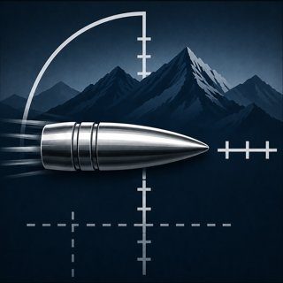

Select a Quick Preset or configure your load, then tap Calculate Trajectory
© Copyright 2026
Simon J. Gibson, CBE

Pick up to three saved presets — any mode, any mix of built-in and your own — to see their headline stats and trajectories side by side under today's conditions.
Fire at a known distance, enter the actual holdover required, and the app will tune the BC to match real-world conditions.
Optional: check the (now trued) model against a second real shot at a different distance — this doesn't refit anything, it just tells you whether the correction above actually holds up further out, or whether the gap grows (a sign the real issue may be muzzle velocity, not BC).
Select a Quick Preset or configure your load, then tap Calculate Trajectory
© Copyright 2026
Simon J. Gibson, CBE
Elevation: positive = dialed up. Windage: positive = dialed right. +/- steps by one click at your configured click size. Leave both at 0 for the full hold with no turret input — the reticle below then shows what's left to hold after dialing.
Generic reticle pattern, not a specific manufacturer's design — hash spacing may not exactly match your scope. Assumes the reticle is at its calibrated magnification (max power for second-focal-plane scopes, any power for first-focal-plane).